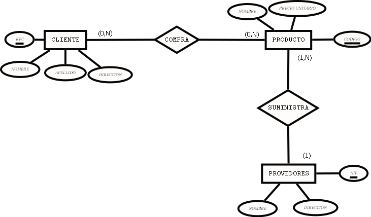
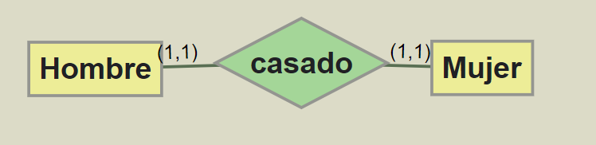
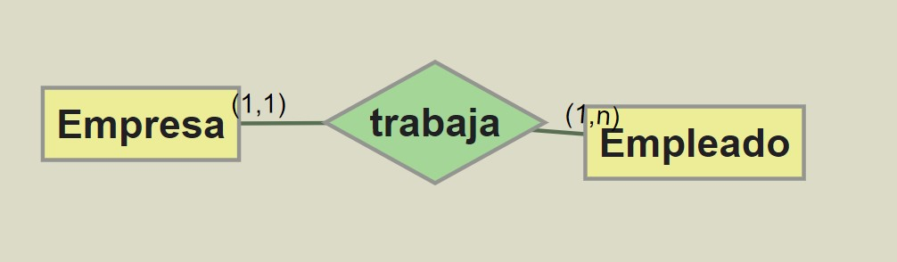
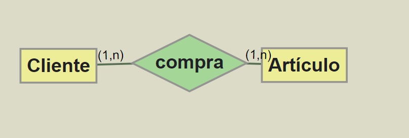

INTERNATIONAL FINANCING
2.3.1. Elements of E/R Model
¿Cuáles son los componentes de un modelo entidad-relación?

Los elementos que componen un modelo entidad relación son:
- Entidad: Una entidad representa cualquier persona, suceso, evento o concepto (en otras palabras, cualquier “cosa”) sobre el que queramos almacenar información. Se representa con un rectángulo. En la imagen, las entidades serían cliente, producto y proveedor.
- Atributo: Son las unidades de información que describen propiedades de las entidades. Por ejemplo, la entidad CLIENTE posee los atributos: RFC, Nombre, Apellido, Dirección. Los atributos toman valores, por ejemplo, el atributo RFC podría ser A303, A414, etc. Se representan mediante una elipse con el nombre en el interior.
- Clave Primaria: Es la clave candidata seleccionada por el diseñador de la Base de Datos para identificar a cada entidad. Una clave primaria no puede tener valores nulos (vacíos), ha de ser sencilla de crear y no ha de variar con el tiempo. El atributo o conjunto de atributos que forman parte de la clave primaria se representan subrayados. En la imagen, las claves primarias serían RFC, CÓDIGO Y NIE.
- Relación: Se entiende por relación aquella asociación o correspondencia existente entre entidades. Se representan mediante un rombo con su nombre, un verbo, en su interior. En la imagen las relaciones son COMPRA Y SUMINISTRA.
- Cardinalidad: expresan el número de entidades a las que puede asociarse otra entidad por medio de una relación. En la representación gráfica se muestran como una etiqueta con 1:1, 1:N, N:1 o N:M, que se leen respectivamente como uno a uno (1:1), uno a muchos (1:N), muchos a uno (N:1) y muchos a muchos (N:M).
Algunos ejemplo de Cardinalidades:
Uno a uno (1:1), es el caso de las entidades HOMBRE, MUJER y la relación ‘está casado’ en nuestra sociedad. Un hombre sólo puede estar casado con una mujer, y viceversa.

. Relación uno a uno (CC0)
- Uno a muchos (1:N), es el caso de las entidades EMPRESA, EMPLEADO y la relación ‘trabaja’. Es evidente que en una empresa concreta trabajan muchos empleados, pero un empleado sólo trabaja en una empresa concreta. (No contemplamos la posibilidad del pluriempleo en nuestra empresa, y exigimos dedicación exclusiva a nuestros trabajadores.

. Relación de Uno a Muchos (CC0)
- Muchos a muchos (N:M), es el caso de las entidades CLIENTE, ARTÍCULO y la relación ‘compra’. Un cliente puede comprar diferentes artículos y un artículo puede ser comprado por diferentes clientes.

. Relación Muchos a Muchos (CC0)
En el siguiente vídeo tienes una sencilla explicación de los elementos que componen un modelo entidad relación, y como se relacionan entre sí:
Elementos de que componen un Modelo Entidad-Relación
Actividades de refuerzo
Pincha el siguiente enlace, y realiza en tu cuaderno las actividades que se indican:
Licensed under the Creative Commons Attribution Share Alike License 4.0